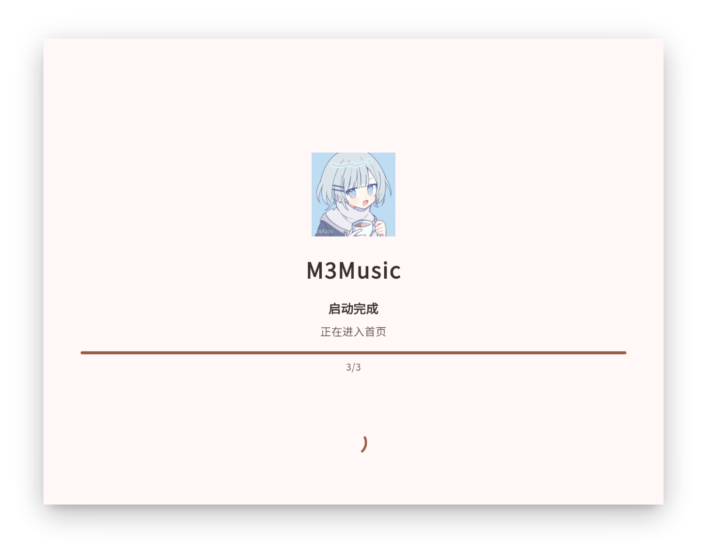
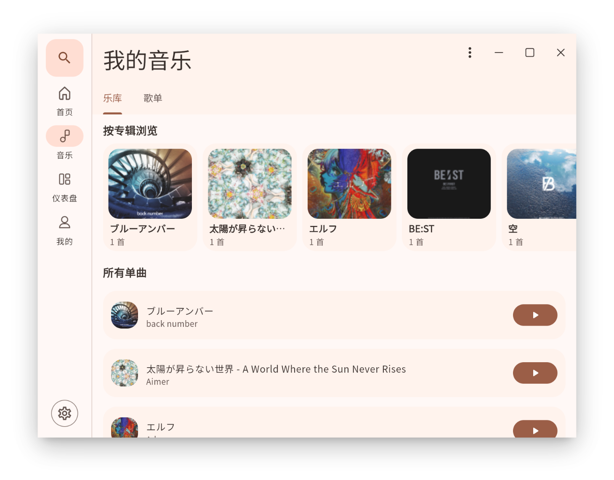
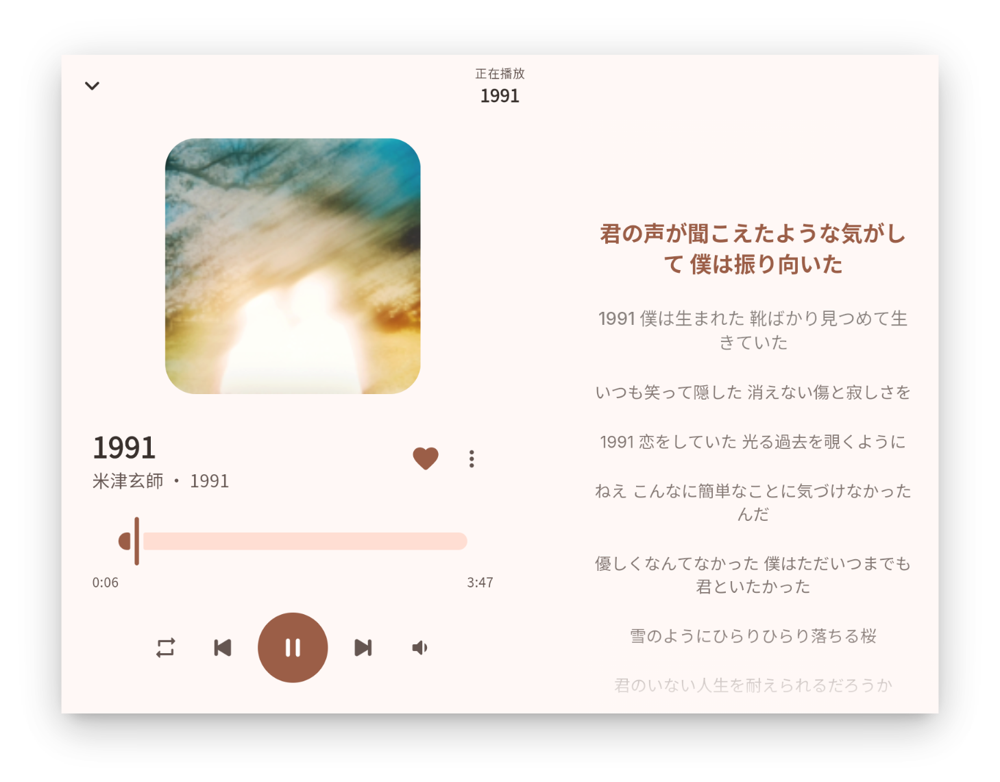
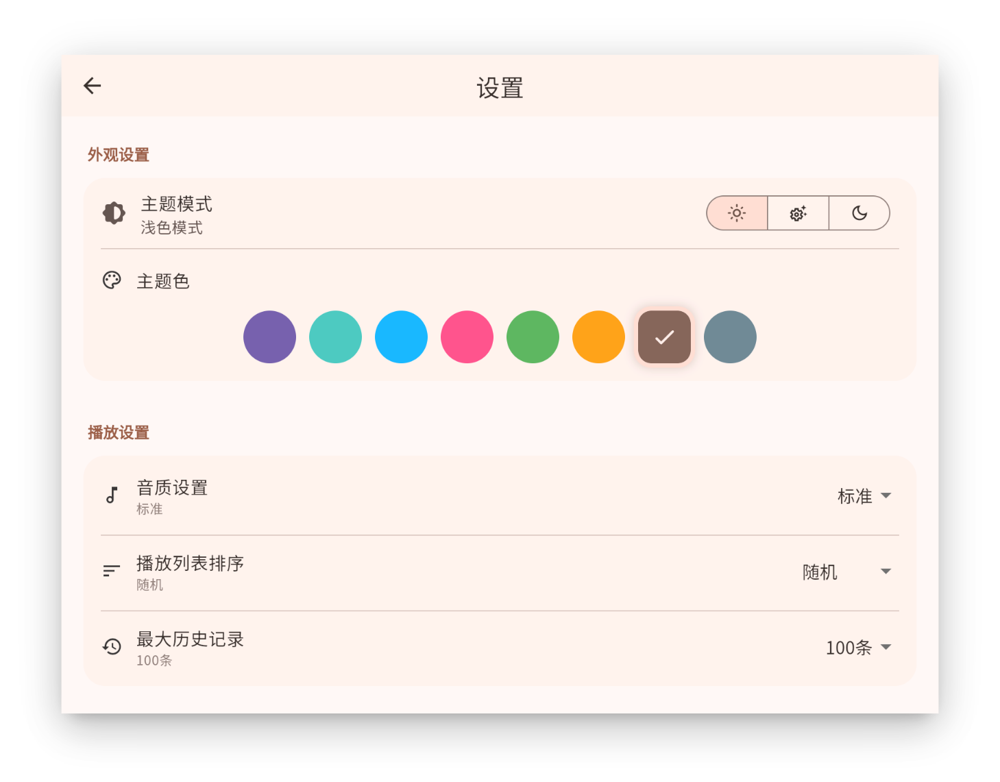

Android · iOS · Windows · macOS · Linux
并行目录扫描 · 元数据解析 · 零成本抽象
动态主题色 · 深色/浅色 · 8 种种子色
Go 后端 · 用户认证 · 登录/注册 API


Rust 并行递归扫描，自动提取标题/歌手/专辑/封面/时长
顺序 / 随机 / 单曲循环 · 队列增删改 · 替换与清空
本地 .lrc 自动读取 · lrclib.net 在线搜索 · 实时高亮 · 编辑保存
自建歌单 CRUD · 收藏/最近播放 · 网易云歌单导入
浅色/深色/跟随系统 · 8 种种子色 · 动态调和
列表密度 · 音质 · 启动行为 · 通知栏 · 排序 · 历史数量
窗口拖拽/最大化 · 自适应 450px 阈值 · 侧边栏/底部导航
Go 后端 · 用户注册登录 · JWT 认证 · 接口就绪


播放控制 · 队列 · 歌词 · 收藏/历史 · 音量
歌单 CRUD · 系统歌单 · 本地持久化
主题模式 · 种子色 · Material 3 动态调色
用户信息 · 登录状态 · Token 管理
导航状态 · Shell 管理
启动流程 · 权限引导 · 数据恢复
flutter pub get
.env（GO_BACKEND_URL=...）
flutter run